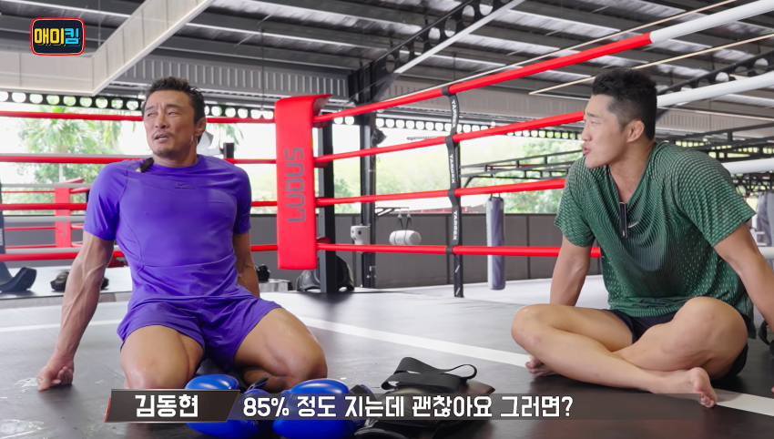

네가 좀 세컨으로 들어올래?

추성훈: S.T.A.Y (대충 인터스텔라짤)
결론
매미킴의 세컨 = 이광수의 똥손
더 이상 매미가 석혀니 세컨 가지 않은걸로 ㅈㄹ마라
매미킴 가지 않아야 석혀니 탑텐에서 논다
네가 좀 세컨으로 들어올래?

추성훈: S.T.A.Y (대충 인터스텔라짤)
결론
매미킴의 세컨 = 이광수의 똥손
더 이상 매미가 석혀니 세컨 가지 않은걸로 ㅈㄹ마라
매미킴 가지 않아야 석혀니 탑텐에서 논다
댓글
수집 당시 댓글 49개
ㅁㄴㅇㄹ · 11.23 22:47:30
· 맥황&맴황 · 11.23 23:07:50
· 맥황&맴황 · 11.23 23:08:13
· ㅁㄴㅇㄹ · 11.23 23:39:08
· 맥황&맴황 · 11.23 23:40:35
· 행복. · 11.23 23:51:22
· 맥황&맴황 · 11.24 00:35:25
· ㅇㅇ · 11.25 03:55:29
· ㅇㅇ · 11.25 06:13:27
· ㅇㅇ · 11.25 06:14:15
· ㅇㅇ · 11.25 07:17:28
ㅇㅇ · 11.24 00:10:06
ㅇㅇ · 11.25 00:13:48
· ㅇㅇ · 11.25 00:15:07
· 맥황&맴황 · 11.25 00:20:10
· 야룽이 · 11.25 00:21:48
· ㅇㅇ · 11.25 07:16:33
· ㅇㅇ · 11.25 10:25:20
ㅇㅇ · 11.25 00:14:37
· ㅇㅇ · 11.25 00:17:23
· 땃땃땃딲땃땃땃땄땃따 · 11.25 00:44:52
· ㅇㅇ · 11.25 01:03:54
· ㅇㅇ · 11.25 02:05:05
· ㅇㅇ · 11.25 04:52:33
· ㅇㅇ · 11.25 07:06:16
· ㅇㅇ · 11.25 07:56:32
히이잉 · 11.25 00:17:17
ㅇㅇ · 11.25 00:30:38
봇치쟝 · 11.25 00:39:34
· 맥황&맴황 · 11.25 00:46:43
· ㅇㅇ · 11.25 03:02:40
ㅇㅇ · 11.25 00:42:59
· ㅇㅇ · 11.25 05:32:36
· ㅇㅇ · 11.25 05:32:48
· ㅇㅇ · 11.25 07:30:43
· ㅇㅇ · 11.25 15:49:57
· ㅇㅇ · 11.25 15:53:05
· ㅇㅇ · 11.25 15:54:30
· ㅇㅇ · 11.25 16:45:47
· ㅇㅇ · 11.25 16:46:24
ㅇㅇ · 11.25 01:09:41
· ㅇㅇ · 11.25 07:09:36
히이잉 · 11.25 01:15:40
ㅇㅇ · 11.25 08:10:32
· ㅇㅇ · 11.25 08:11:39
ㅇㅇ · 11.25 10:34:25
ㅇㅇ · 11.25 12:54:50
ㅇㅇ · 11.25 15:00:26
00 · 11.25 15:12:18